Historia del Club Atlético Independiente
Fundación (1905)
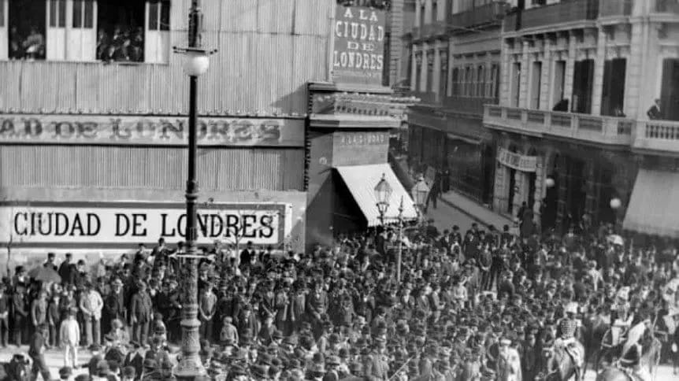
Su fundacion comenzo bajo el nombre de Foot-Ball Club en el año 1904, para luego pasar a llamarse Club Atleticlo Independiente en el 1 de enero de 1905. Originado en Monaerrat Buenos Aires, fundado por un grupo de empleados y cadetes de la tienda "A la Ciudad de Londres", el principal impulsor de la idea fue Rosenado Degiorgi, paso por 2 etapas su fundacion, se gesto en el 1904 cuando se separaron del Foot-Ball Club para crear el suyo el cual fue en la azamblea general del 1905 (donde se fundo oficialmente). El club se mudo a crcecita en 1907 y por ultimo llego a avellaneda en el año 1928, donde se encuentra actualemnte 98 años despues
Primer Camiseta
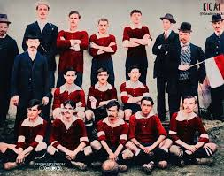
Su primer camiseta fue completamente blanca con pantalones de color azul (color que hoy en dia el club sigue usando en sus camisetas alternativas), tenian ese color debido a que los jovenes que fundaron el club reutilizaron las del club Plate United FC, que habia dejado de existir, para años despues en 1908 adoptar su mitico color rojo caracteristico hasta el dia de hoy.
Primer Escudo

Su primer escudo fue uno Azul con lineas blancas, el IFC significaba Independiente Football Club. Fue una adaptacion del escudo del primer club campeon del Futbol Argentino, el cual se llamaba Saint Andrews Fútbol Club, cuyo diseño se inspiraba en la bandera de Escocia.
Primer Partido
Tuvo lugar en el año 1905 (amistoso), el 15 de enero contra Atlanta A.C, el cual perdio Independiente jugando de visitante por 1-0 con gol de Ramón Cabred.
Primer Triunfo
Su primer triunfo oficial ocurrio justamente en la tercer fecha de la copa villalobos (copa amateur), contra Boca Jrs el 27 de agosto de 1905, el cual independiente de local gano 4-1.
Primer Triunfo Clasico
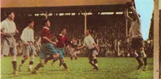
Independiente debuto en primera division oficialmente el 14 de julio del año 1912, contra Kimberley en condicion de local ganandole por un total de 3-0. los goles del rojo fueron convertidos por Bartolomé Lloveras, Francisco Roldán y José Laguna, empezando asi su primer torneo en primera.
Primer Campeonato Primera Division
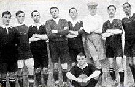
En su debut oficial en la primera division en el año 1912 Independiente tambien completo una gran campaña, terminando en primer lugar junto con el club Porteño con los mismos puntos, para definir el campeon se jugo un partido de desempate, el cual Independiente perdio y quedo subcampeon.
Primer Título
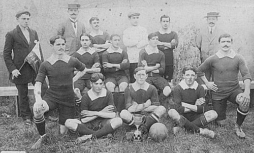
Corresponde al titulo Copa Bullrich, disputada en el 1909 la cual era una copa nacional que unicamente jugaban equipos argentinos.
Primer Titulo Profesional
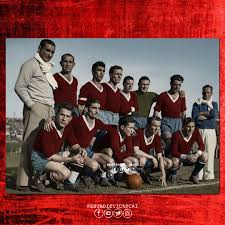
Fue correspondiente al campeonato de primera division del año 1938, despues de golear a lanus por un total de 8-2
Primer Titulo Internacional
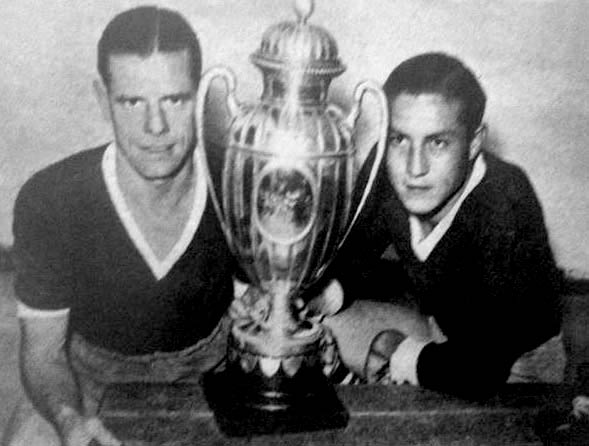
Su primer conquista internacional ocurrio en la copa Aldao, contra peñarol de uruguay, su formato consistia en enfrentar al campeon del futbol argentino contra el campeon del futbol uruguayo, el cual fue peñarol, ganandole por un total de 3-1.
Primer Copa Libertadores Disputada
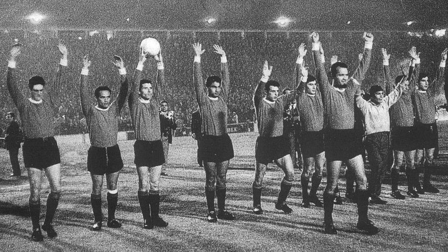
La primer copa libertadores de Independiente fue en el año 1964, siendo su primera edicion jugada en toda su historia y la cual gano contra el club Nacional de Uruguay, por un total de 1-0 en la antigua doble visera, dandole su primera de las siete que tiene hoy en dia.
Epoca Dorada
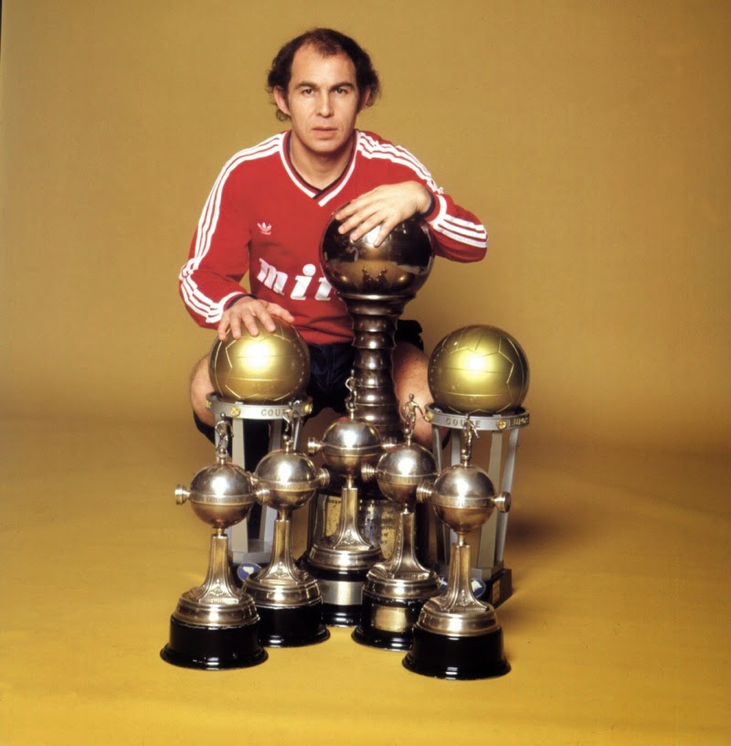
Hablando del 64, justamente por esos años arranco la famosa "era dorada" del rojo, marcando su legado como el primer Rey de Copas, ganando 19 titulos en total en los años 60 al 90, correspondientes a 7 Copas Libertadores(en principio llamada Copa Campeones de America, la cual gano en el 64, 65, 1972, 73, 74, 75 y 84), 2 Intercontinentales (1973 y 1984),3 Interamericanas (1973,74 y 76) y 7 Campeonatos argentinos (1960, 63, 67, 1970, 71, 77, 78 y el ultimo en la temporada 88/89), tambien consolidando a Ricardo Enrrique Bochini como su maximo idolo hasta la fecha actual, su juego era uno muy fuerte mas que nada en la libertadores, goleadas, titulos y varias semifinales (la ultima en el año 87), tambien jugo contra varios equipo europeos al ganar la libertaodres, tales como el Inter de Milan, Atletico de Madrid, Juventus, Liverpool y el Ajax, a los cuales le gano a la Juventus en el 73 y al Liverpool en el 84 (su ultima intercontinental hasta el dia de la fecha), le saco un total de 12 clasicos de diferencia a Racing entre estos años (la mayor fue 15 que duro del 83 al 87), en la Copa Interamericana ya dicha independiente clasifico al ganar las libertadores de esos años de los 70, en el 73 venciendo a el Olimpia de Honduras, en el 74 ganandole a Municipal de Guatemala (1-1 el partido y 4-2 en penales) y en el 76 ganandole a Atletico Español de Mexico por gol de visitante (2-2 ida 0-0 vuelta), su declive fue dandose poco a poco durante los años siguientes, pero esta epoca fue la que demostro el mounstro tanto nacional como internacional que era Independiente, a dia de hoy sigue esperando su regreso a pesar de las malas gestiones del club.
El Declive
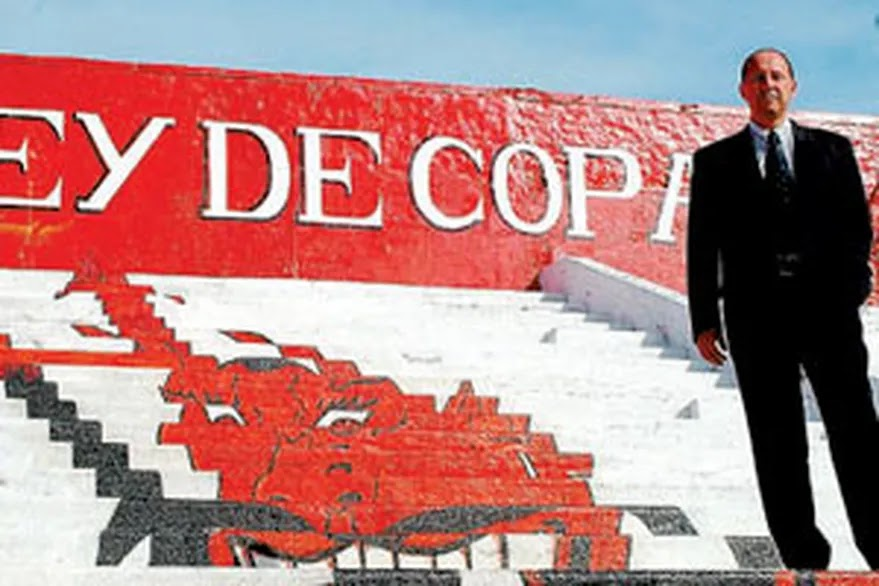
El comienzo de declive arranco en el año 1996 y se termino de gestar en el 2014, pero antes de llegar a eso, hay q hablar del principio, a pesar de venir de los 60, 70, 80 y principios de los 90 (cabe aclarar que aca el rojo antes de esto ya habia ganado la recopa sudamericana en el 95 mas la recopa contra el Flamengo, la supercopa sudamericana contra el Boca de mennoti en el 94 y el clausura del 94, a pesar del retiro de bochini), todo comenzo en el 96, año que Independiente quedo subcamepon del clausura, empezo una crisis que hasta hoy en dia persigue al rojo, la crisis economica, debido a la incapacidad de una dirigencia que no sabia que hacer y que a dia de hoy por culpa del pasado no sabe como puede recuperarse de las deudas, que empezaron por aca, el club acumilo un total de 18-20 millones de dolares pasivos, pero los problemas economicos y fracasos locales no ayudaban a invertir esa plata en algo que no sea deudas, que eran de 6.2 millones, pasaron a 19 millones durante la gestion del inepto de Bottaro, una cifra que era una locura pq casi todo o literalmente todo el dinero que ingreso servia para pagar deuda y no invertir en el equipo, que paso de tener planteles competitivos, titulos, años de gloria, a parecer un equipo mas que no podia pagar para competir, y esto llevo a lo llamado "efecto domino" de los proximos años que estaban por venir (y que eran uno peor q el anterior), desde el 96 que los dirigentes no hablan de otra cosa que no sea "salvar economicamente al club", porque la verdad es el primer cancer que se tiene que sacar de encima, a partir del 98 independiente dejo de ser ese mounstro que era hace solo 10 años atras y paso a ser uno mas, mientras que clubes como Boca y River estaban llenos de plata, el rojo no podia gastar mucho, tambien la llegada de Hector Grondona (el hermano de Julio) asumio en uno de los momentos mas jodidos del club, el gasto a pagar crecia, pero Independiente no tenia con que suplirlo, llego hasta los 30 millonesUSD de deuda, tenia que vender para pagar que para un club gigante es muy grave ¿como no vas a tener plata siendo que sos el maximo ganador en casi todo lo internacional y un mounstro a nivel local?, gracias a Diego Forlan y su venta al manchester, Independiente pudo salvarse por un tiempo, pero era un jugador muy importante y el club lo sabia, la crisis del 2001 de Argentina tampoco ayudo mucho que digamos, pero inexplicablemente en 2002 se pudo armar un buen plantel en base a prestamos, acuerdos y gestiones de plata extremas, a pesar de que lo dicho por el presidente Ducatenzeiler que gano un torneo con un equipo con un equipo sin plata para invertir, hizo un cambio importante debido a su peso politico de antes, pero logro el toneo Apertura del 2002, que puede ser el mejor Independiente de este siglo junto con el de 2017, pero a pesar de salir campeon, no soluciono un carajo la crisi que el club tenia, a pesar de lo bueno, lo malo seguia estando ahi, y peor aun se desarmo todo el equipo campeon del 2002 (error muy grave), se fueron Montenegro, Pusineri, Dominguez, y sumado a que el club no podia invertir, fue un desastre total el 2003, y arranco a cambiar de tecnico en poco tiempo, que tenian ideas distintas y que pedian un jugador que el otro no lo queria mas la paga del contrato, empeoro todo, la venta de Gabriel Milito ayudo con un poco de esa plata, pero el rojo vendia pero no se armaba bien para competir por algo, y eso de tener una figura para venderla y hacer plata se repitio en mucho tiempo, aca aparecio Sergio el Kun Agüero, que Ruggeri hizo debutar tan solo con 15 años, que en un futuro, salvo al club con su venta de aproximadamente 15Millones de USD, pero despues volvio el mal ciclo, en el 2004 hubo una horrible campaña en libertadores que no hace falta hablar, la deuda aumento a 36 millones y el club ya no sabia que hacer, y luego de todo, el presidente Duca renuncio y asumio Julio Comprada que dijo "hay que arreglar el club" prometiendo que iba a sacar esa crisis economica que tanto afectaba la institucion, decidio tirar el mitico estadio de la doble visera para construir el Libertadores de America, para tener mas ingreso y capacidad, pero la pregunta es, en un club que venia hasta el cuello con el tema de la plata y deuda ¿como fue que Comprada financio esta cancha?. Se diceque el club decidio endeudarse para crecer y que Comprada vinculo gran parte del pasivo a la construccion del estadio, lo que genero patrimonio e ingresao, pero tambien mas prestamos y pagos atrasados, tuvo que alquilar canchas mientras se construia el nuevo estadio allgo que tambien afecto pero que las ventas ayudaron un poco a suplir. Entro mucha plata, pero el club se endeudo igual y seguia el domino de vender y traer malos refuerzos, mas los cambios constantes de tecnicos (Pedro Troglio, Claudio Borghi, Santoro de interino, Gallego en su segunda etapa, Daniel Garnero y Antonio Mohamed), en el 2007 el equipo parecia resurgir en el torneo apertura, pero se cayo al final, a pesar de eso, por lo menos pudo ganar la sudamericana del 2010, el ultimo titulo antes del desastre final.
Muerte Anunciada
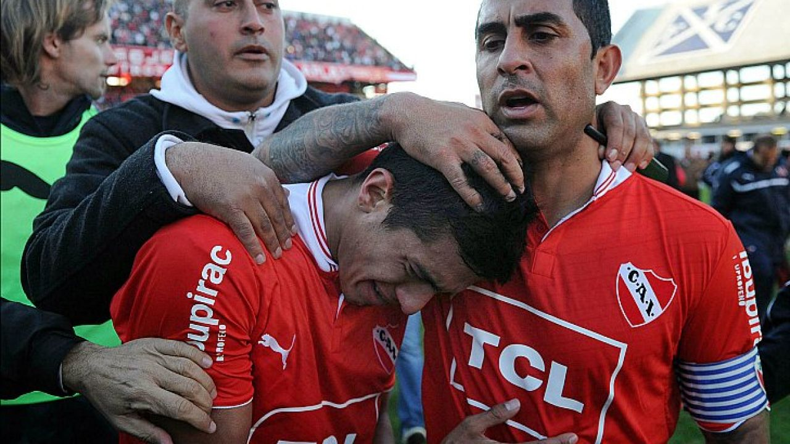
Despues de la salida de Comprada llego Javier Cantero, pero se peleo con bebote Álvarez el jefe de la barra del rojo acusandolo de negocios ilegales alrededor del club y el manejo de entradas, pero mientras eso pasaba los 3 años de Independiente que empezaron su muerte futbolistica, 3 años sin jugar bien y sin competir esta vez pasaron factura, haciendo que el gran mounstro que fue Independiente termine descendiendo despues de 101 años consecutivos en primera division, por culpa de malos manejos, pesimos equipos, problemas internos, y muchas cosas mas que llevaron a ese descenso el 15 de junio de 2013, que fue muy bien dicha una cronica de una muerte anunciada desde hace mucho tiempo.
Intento Por Resurgir
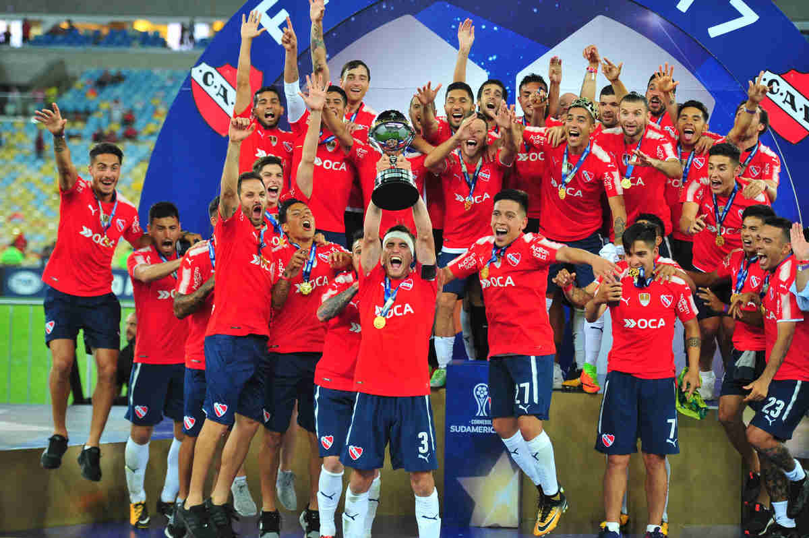
Luego de volver a primera en el año 2014 en junio (un año despues del descenso) intento volver a competir y por momentos parecia que si lo haria, como en el 2017 que gano la sudamericana al Flamengo en Brasil, luego en 2018 la Suruga Bank y perder por penales contra Gremio, estuvo en la Libertadores despues de varios años, quedandose en cuartos de final, que era un avance bueno, pero años despues volvio a lo de siempre, las deudas, a pesar de la semifinal del torneo en arentino en 2021 y 2025, el club actualmente sigue con los mismo problemas de siempre y falta tiempo para que eso se arregle.